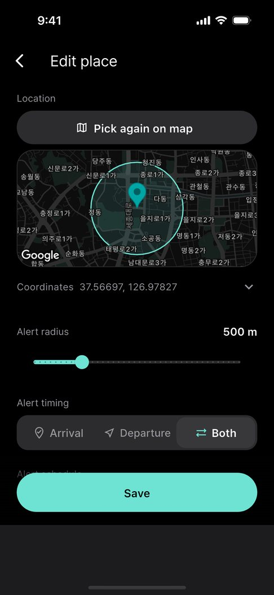
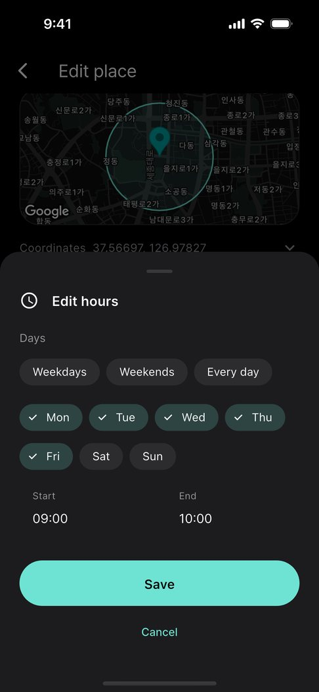
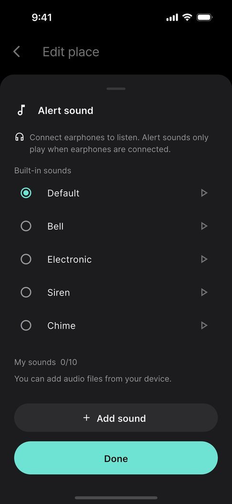
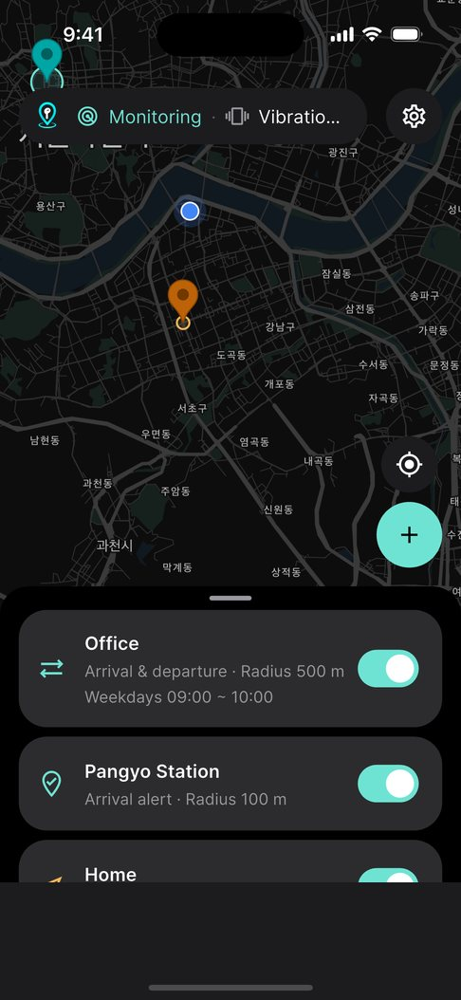

01
Pin it on the map,
set the radius.
A stop, a station, your office — anywhere. Choose from 50 m to 2 km while you see the circle.

Bus · Subway · Shuttle arrival alerts
A buzz when you arrive. Sound only through your earphones.
A location alarm that never uses the speaker.

The moment you arrive
Step inside the radius and your phone vibrates right away. It watches in the background, so you never have to keep the app open.
Heading to Pangyo Station
Shuttle buses
Work and campus shuttles rarely name their stops or announce them, so it’s easy to ride right past while you look out the window. Pin the office gate, your dorm or the airport drop-off once.
How it works
01
A stop, a station, your office — anywhere. Choose from 50 m to 2 km while you see the circle.

02
Pick when each place alerts you. Set days and hours, and it alerts only then.

03
Wired, USB-C or Bluetooth. Sound only when a connection is confirmed — otherwise, vibration only.

04
Big enough to press with your thumb on a moving bus, without looking.
Features
Save a place and it watches in the background. Your location never leaves the device.

Light · Medium · Strong
From 50 m to 2 km
Connected devices are checked against an allow list.
Set days and hours and it alerts only then.
Guides
Why time alarms, announcements and map apps fall short — and how to use a location alarm.
Read ShuttleGet an alert at your drop-off even when the shuttle has no stop names or announcements.
Read SubwayWhy location can lag underground, and how to set a radius so you don’t miss your station.
Read Quiet placesAlerts by vibration and earphones only — never leaking from the speaker.
ReadFAQ
Yes. Save your stop or station on the map and your phone vibrates the moment you enter that radius — even with the app closed and the screen off.
No. It plays a sound only after confirming wired, USB-C or Bluetooth earphones are connected. Otherwise it only vibrates and never uses the speaker.
It does not keep GPS on. Far from your places it relies on the system’s geofencing, and only checks precisely when you get close.
No. Arrival is detected on your phone, and your places and history stay on the device. There is no account.
Yes. If your Galaxy Watch or Apple Watch mirrors phone notifications, arrival alerts reach your wrist. Settings › Get alerts on your watch shows how.
Yes. It includes ads, but never on the screen that is alerting you.